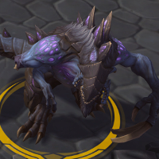
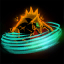
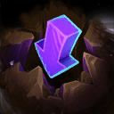
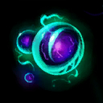
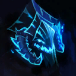
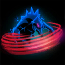
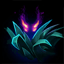
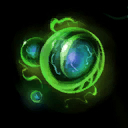

Dehaka
Welcome to our Dehaka guide for Heroes of the Storm. Here you will learn everything you need to know in order to play Dehaka in a competitive environment, whether you play on your own or with a team.
Split Soak Build
| Level 1 | Level 4 | Level 7 | Level 10 | Level 13 | Level 16 | Level 20 |
|---|---|---|---|---|---|---|
|  |  |  |  |  |  |
These Talents focus on maximising Dehaka's split soaking potential. The main component of this build is Primal Aggression Icon Primal Aggression, which allows you to clear Minions quickly. Push Minions into towers while enemies rotate to map objectives, which will result in an experience advantage for your team. Make sure to use Brushstalker Icon Brushstalker to get to the objective on time yourself; otherwise, your teammates will often die as a result of being outnumbered. Because you will be clearing Minion waves frequently, Essence Devourer Icon Essence Devourer will work well as a sustain replacement for Hero Stalker Icon Hero Stalker in this build. This frees up your Level 4 Talent for Lurker Strain Icon Lurker Strain, giving you AoE crowd control you would otherwise lack as Dehaka. Talent Substitutes for this build are Hero Stalker at 4 with Symbiosis Icon Symbiosis at 7, which will increase your teamfight damage while reducing the crowd control you are capable of. You may want Isolation Icon Isolation instead of Adaptation if you need additional crowd control, which can be good when you have a second Warrior to help tank.
Team Fight Build
| Level 1 | Level 4 | Level 7 | Level 10 | Level 13 | Level 16 | Level 20 |
|---|---|---|---|---|---|---|
|  |
This build focuses on team fight damage and sustain over crowd control. When your team is ready to fight, position yourself to apply Dark Swarm Icon Dark Swarm to multiple enemy Heroes. Use Dark Swarm constantly to reduce the Ability Damage you receive, and increase all damage effected enemies take. Tunneling Claws Icon Tunneling Claws allows you to continue applying Dark Swarm if you become rooted or slowed, and will also allow you to escape when needed. This is important, because it makes it much safer to position aggressively to get the most out of Primal Swarm Icon Primal Swarm. Hero Stalker Icon Hero Stalker will be your sustain Talent here, because it rewards the build's aggressive style. Use Adaptation Icon Adaptation and Essence Collection Icon Essence Collection to keep yourself in the fight until the first takedown, at which point you will recieve additional Essence. If the enemy team does more damage with Basic Attacks than Abilities, take Tissue Regeneration Icon Tissue Regeneration as a sustain option at Level 1 instead of Enduring Swarm Icon Enduring Swarm.
Go Back